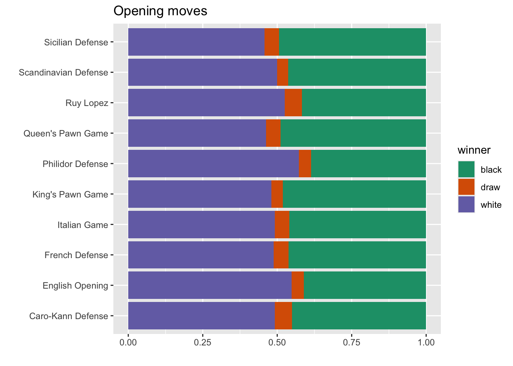
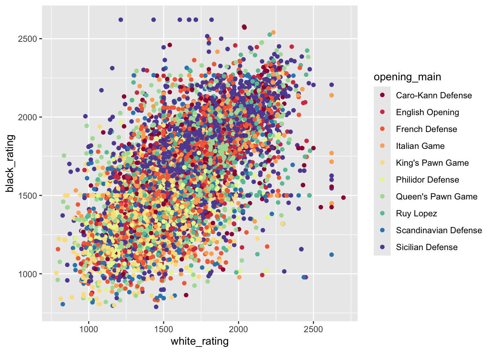
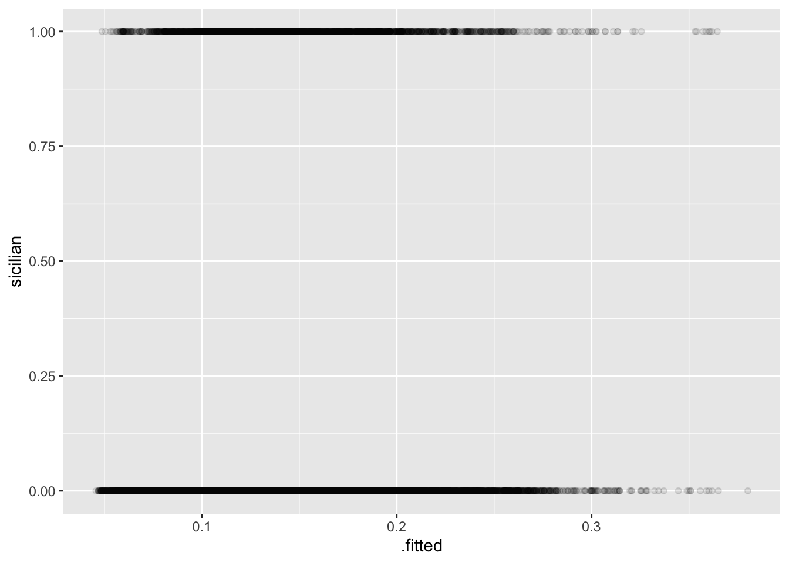

library(tidyverse) # ggplot, lubridate, dplyr, stringr, readr...
library(praise)Chess Matches
The Data
The chess dataset this week comes from Lichess.org via Kaggle/Mitchell J.
This is a set of just over 20,000 games collected from a selection of users on the site Lichess.org.
Use the data to explore -
- What the common opening moves? By ranks?
- How many turns does a game last based on player ranking?
- What move patterns explain the game outcome?
Thank you to Havisha Khurana for curating this week’s dataset.
Collapsing the type of opening
There are a lot of opening moves. In order to have some understanding of the patterns, we’ll collapse the different opening moves into the base opening (e.g., before the :, |, or #).
chess <- readr::read_csv('https://raw.githubusercontent.com/rfordatascience/tidytuesday/master/data/2024/2024-10-01/chess.csv') |>
mutate(opening_main = case_when(
str_detect(opening_name, ":") ~ str_extract(opening_name, ".+?(?=:)"),
str_detect(opening_name, "\\|") ~ str_extract(opening_name, ".+?(?= \\|)"),
str_detect(opening_name, "#") ~ str_extract(opening_name, ".+?(?= #)"),
TRUE ~ opening_name)) |>
mutate(num_moves = str_count(moves, "\\S+"))Opening moves
Let’s keep only the top 10 opening moves.
top_open <- chess |> group_by(opening_main) |>
summarize(open_count = n()) |>
arrange(desc(open_count)) |>
filter(open_count > 500) |>
select(opening_main) |>
pull()
top_open [1] "Sicilian Defense" "French Defense" "Queen's Pawn Game"
[4] "Italian Game" "King's Pawn Game" "Ruy Lopez"
[7] "English Opening" "Scandinavian Defense" "Philidor Defense"
[10] "Caro-Kann Defense" chess_top <- chess |>
filter(opening_main %in% top_open)chess_top |>
ggplot(aes(x = opening_main, fill = winner)) +
geom_bar(position = "fill") +
#theme(axis.text.x = element_text(angle = 45, vjust = 0.5, hjust=0.5)) +
scale_fill_brewer(palette = "Dark2") +
coord_flip() +
labs(y = "", x = "",
title = "Opening moves")
To look at the differences of opening strategies as a function of the player ratings, we’ll use only the top 5 opening strategies.
top_open_5 <- chess |> group_by(opening_main) |>
summarize(open_count = n()) |>
arrange(desc(open_count)) |>
filter(open_count > 500) |>
select(opening_main) |>
pull()
top_open_5 [1] "Sicilian Defense" "French Defense" "Queen's Pawn Game"
[4] "Italian Game" "King's Pawn Game" "Ruy Lopez"
[7] "English Opening" "Scandinavian Defense" "Philidor Defense"
[10] "Caro-Kann Defense" chess |>
filter(opening_main %in% top_open_5) |>
ggplot(aes(x = white_rating, y = black_rating, color = opening_main)) +
geom_point() +
scale_color_brewer(palette = "Spectral")
Model
Just for fun, let’s run a logistic regression. Seems like there isn’t really much of a relationship between the ratings, the number of moves, whether or not the game/players were rated and the out come of whether the Sicilian Defense was used.
chess <- chess |>
mutate(sicilian = ifelse(opening_main == "Sicilian Defense", 1, 0))
glm(sicilian ~ black_rating + white_rating + num_moves + rated,
data = chess, family = "binomial") |>
broom::augment(type.predict = "response") # A tibble: 20,058 × 11
sicilian black_rating white_rating num_moves rated .fitted .resid .hat
<dbl> <dbl> <dbl> <int> <lgl> <dbl> <dbl> <dbl>
1 0 1191 1500 13 FALSE 0.0763 -0.398 0.000296
2 0 1261 1322 16 TRUE 0.0820 -0.414 0.000161
3 0 1500 1496 61 TRUE 0.112 -0.488 0.0000726
4 0 1454 1439 61 TRUE 0.106 -0.474 0.0000809
5 0 1469 1523 95 TRUE 0.110 -0.483 0.000122
6 1 1002 1250 5 FALSE 0.0597 2.37 0.000291
7 0 1423 1520 33 TRUE 0.101 -0.462 0.000107
8 0 2108 1413 9 FALSE 0.215 -0.696 0.00110
9 0 1392 1439 66 TRUE 0.0988 -0.456 0.0000885
10 0 1209 1381 119 TRUE 0.0815 -0.412 0.000241
# ℹ 20,048 more rows
# ℹ 3 more variables: .sigma <dbl>, .cooksd <dbl>, .std.resid <dbl>glm(sicilian ~ black_rating + white_rating + num_moves + rated,
data = chess, family = "binomial") |>
broom::augment(type.predict = "response") |>
ggplot(aes(x = .fitted, y = sicilian)) +
geom_point(alpha = 0.1)
praise()[1] "You are first-rate!"